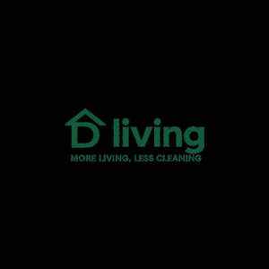

Trade Mark Journal No.2025/038 19 September 2025
UK00004260461 7 September 2025 (37)

- Class 37
- Polishing (cleaning); Carpet cleaning; Cleaning of upholstery; Emptying [cleaning] services; Dry cleaning; Cleaning (Dry -); Cleaning services; Cleaning of furniture; Cleaning of clothes; Janitorial cleaning services; Rug cleaning; Clearing and cleaning gutters; Diaper cleaning; Cleaning (Diaper -); Cleaning of drains; Polishing [cleaning] of vehicles; Cleaning of furnishings; Building cleaning; Domestic cleaning; Cleaning of blinds; Cleaning of boilers; Cleaning of clothing; Clothing (Cleaning of -); Cleaning of machines; Jewelry cleaning; Textile cleaning; Car cleaning; Cleaning of mats; Cleaning of windows; Waste removal [cleaning]; Cleaning of offices; Cleaning of shoes; Cleaning of textiles; Diaper cleaning services; Upholstery cleaning services; Drain cleaning services; Window cleaning; Cleaning of fabrics; Cleaning of culverts; Jewellery cleaning; Cleaning of footwear; Maintenance of cleaning machines; Automobile cleaning; Cleaning of gullies; Cleaning of leather; Cleaning of property; Boiler cleaning services; Cleaning of factories; Cleaning of shops; Street cleaning; Cleaning of automobiles; Boiler cleaning and repair; Cleaning of buildings; Cleaning of hospitals; Cleaning of schools; Cleaning of streets; Vehicle cleaning; Cleaning of vehicles; Restroom cleaning services; Loft cleaning; Cleaning of structures; Hygienic cleaning [vehicles]; Cleaning of facades; Cleaning of hotels; Facade cleaning; Hygienic cleaning [buildings]; Cleaning of domestic utensils; Leather cleaning and repair; Tube cleaning services; Cleaning of monuments; Office cleaning services; Mechanical cleaning of waterways; Industrial cleaning services; Stain removal; Removal of graffiti; Stain removal from carpets; Snow removal services; Rust removal; Asbestos removal; Waste disposal [cleaning service]; Ceiling cleaning services; Maintenance and cleaning of mining equipment; Fur care, cleaning and repair; Fur cleaning, care and repair; Cleaning by means of sanding (Services for -); Removal of debris from buildings; Provision of cleaning services; Leather care, cleaning and repair; Cleaning, care and repair of leather; Escalator cleaning services; Cleaning equipment hire; Waste disposal for others [cleaning service]; Maintenance of property; Property maintenance; Renovation of property; Maintenance of buildings; Repair and maintenance of land vehicles; Building maintenance; Property development services [construction]; Repair or maintenance of building equipment; Maintenance and repair of building contents; Maintenance of plumbing; Furniture maintenance; Floor maintenance services; Maintenance and repair of security installations; Office equipment maintenance; Maintenance of vehicle washing installations; Maintenance and repair of heating installations; Building maintenance and repair services provided by a handyman; Cleaning of commercial premises; Industrial deep cleaning for commercial catering establishments; Cleaning of industrial premises; Cleaning of office buildings and commercial premises; Industrial cleaning of buildings; Domestic cleaning services; Valeting services relating to industrial cleaning; Cleaning of industrial boilers; Cleaning of domestic premises; Cleaning of residential houses; Rental of abrasive cleaning equipment; Rental of cleaning machines; Cleaning machines (Rental of -); Rental of cleaning equipment; Cleaning equipment (Rental of -); Rental of carpet cleaning machines; Installation of commercial cooking apparatus; Cleaning of public buildings; Cleaning of building interiors; Leasing of machines for cleaning rugs; Rental of cleaning apparatus; Housekeeping services [cleaning services]; Contract cleaning of offices; Valeting services relating to office cleaning; Cleaning of mobile sanitary facilities; Services for the dry cleaning of clothing; Valeting services relating to household cleaning; Swimming pool cleaning services; Rental of cleaning and washing machines and equipment; Cleaning of stone work; Leasing of cleaning machines; Rental of abrasive cleaning apparatus; Rental of floor cleaning machines.
Domura living LTD